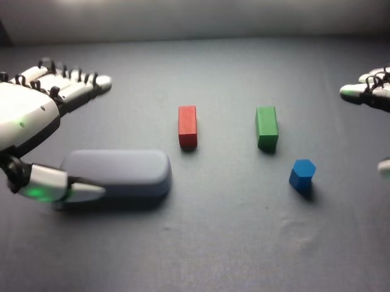

RoboCOIN · Airbot MMK2 · stack_block/episode_000001
Episode 000001

Annotation
From the dedicated visual review of this video (humanoid_action_v1). Plain text · JSON
Observed outcome
- Status
success_visible
- Description
The glasses case is bridged across the tops of the red and green blocks. The blue block ends standing upright on the right end of the case's top surface after the right hand opens (frame 177). During the right hand's final withdrawal (frames 180-187) its thumb and finger sweep past the block, which still appears on the case with perhaps a very slight shift in the last blurred frame. The right hand has not completely cleared the case at the clip end.
Hand roles
- Left
Robot's left hand (image-left): the only hand active in frames 0-96. It grasps the glasses case with fingers over the top and thumb underneath, lifts it, carries it over the red and green blocks, lowers it so it spans both, releases and withdraws. It stays open and idle afterwards, so it neither supports nor stabilizes the stack during the right-hand placement.
- Right
Robot's right hand (image-right): stationary and partly out of view in frames 0-96. From about frame 97 it approaches the blue block, pinches it between thumb and fingers (about frames 126-134), lifts and carries it above the case's right end, lowers it onto the case top, opens, and withdraws (frames 171-187).
Coordination
Strictly sequential, no hand-to-hand transfer or simultaneous manipulation: left hand finishes and withdraws first (about frame 96), then the right hand performs its pick and place while the left hand stays idle at the left. The left hand's placement forms the support (case on two blocks) that the right hand's block is placed onto.
Robot-side evidence
- Conclusion
The hand at image-left is the robot's left hand and the hand entering from image-right is the robot's right hand. Image left matches robot left in the head view.
- Evidence
- Telemetry (observation.state, joint names from metadata): left_arm joints 1-6 and left_hand joints 1-12 change substantially in frames 0-110, the period when the image-left hand grasps, lifts and places the case, while right_arm joints are essentially unchanged until about frame 75 and move mainly in frames 75-188 when the image-right hand picks and places the blue block.
- cam_left_wrist_rgb at frame 50 shows the case-like pale grey-purple object beside the hand and cam_right_wrist_rgb at frame 140 shows the blue block between the fingers, matching the head-view hands.
- cam_front_rgb views the scene from the far side, with the hand carrying the case early and the blue-block hand late, consistent with the head view's role assignment.
- Publisher instruction assigns the first task (square blocks/case) to the left hand and the second (cylindrical block on top) to the right hand, which agrees with the visible sequence. The publisher text was not used as the sole evidence.
- Confidence
high
Chronology
| Frames | Observation |
|---|---|
| 0–23 | Initial state: glasses case rests on the table at image-left; red block and green block stand upright in the middle; blue pentagonal-prism block lies at image-right of them. Robot's left hand (image-left, open) is beside the case. The right hand is only partly visible at the right image edge. The left hand lowers and its thumb moves under the case's near edge while the fingers settle over the top. |
| 24–36 | Left hand closes onto the case: fingers over the top, thumb beneath/near edge. The case starts to slide and lift (case appears off the table and motion-blurred by frame 34-36). The right hand stays open and static at the right edge. |
| 37–47 | Left hand lifts the case and carries it toward the red and green blocks, raising the arm so the forearm and cable enter the view. |
| 48–66 | Case held by the left hand just above the red block and green block, bridging them; the hand adjusts height and orientation, lowering gradually (the case is still carried and the thumb still supports it near the red block at frames 66-68). |
| 67–78 | Case is lowered onto the tops of the red and green blocks (touching by about frame 72-73) and rests across both, spanning them lengthwise. The left thumb/fingers remain next to the case edge near the red block. |
| 79–96 | Left hand releases (fingers opening, native frame 85 shows the hand lifting away with the case staying put) and withdraws toward image-left; case stays stacked on the two blocks. |
| 97–118 | Left hand rests open at image-left, idle for the rest of the clip. The right hand moves in from the right edge toward the blue block, fingers extended, with the thumb opposed. |
| 119–134 | Right hand lowers onto the blue block and closes; by native frame 133 the block is held between the thumb and the other fingers beside the green block. |
| 135–152 | Right hand lifts the blue block clear of the table (frames 138-144) and raises it, carrying it up and left over the right end of the case (frame 146-152). |
| 153–170 | Right hand lowers the blue block to the case's upper surface near the right (green-block) end; the arm with its cabling is now visible. The block touches the case by about frame 164-168 and is oriented upright. |
| 171–179 | Right hand opens and lets go (frame 177: blue block stands upright on the case, thumb beside it and fingers raised); block stays in place. |
| 180–187 | Right hand slides back and out; its thumb and finger sweep past the blue block's right side (motion-blurred at frame 187, blue block still visible on the case, possibly very slightly shifted). The clip ends before the right hand fully clears. Left hand still idle. |
Clip selection
Complete single-task clip retained: the left hand places the glasses case on the red and green blocks, then the right hand places the blue block on the case. These are ordinary phases of one stacking task, so the full video is kept without cropping or a first_substep.
Differences from the publisher annotation
- The publisher instruction says 'square building blocks in the center' placed by the left hand; visibly the left hand places a rounded glasses case (not a building block) across a red block and a green block, with a rectangular cuboid shape for each. The subtask label names the case ('Grasp the glasses case with the left gripper').
- The instruction says 'cylindrical building blocks' on top by the right hand; the visible block is a blue pentagonal (five-sided) prism, not a true cylinder, and it is placed upright near the right end of the case, not at the center.
- Subtask labels call the end effectors 'grippers', but the robot has five-finger dexterous hands.
- Subtask timeline: Grasp case 0-28, place case 29-73, grasp blue block 74-130, place blue block 131-174, End 175-187. Visually, the left hand's grasp closes about frames 24-36 and the case is lowered onto the blocks by about 72, so the 'place case' label spans the lift and carry as well. The release/withdrawal at 79-96 is labeled as 'grasp blue block' although the right hand only begins to approach the block at about 97 and closes about 126-134. The blue block lifts from about 138 and touches the case about 164-168, with release about 171-177; the 'End' label begins at 175 while the right hand is still releasing and withdrawing until 187.
Uncertainties
- Exact finger contact points on the case and the blue block are partly occluded in the head view; 'fingers over the top and thumb underneath' for the case is the visible configuration at native frames 31-37, while the case may also be supported by the palm side.
- Whether the blue block is slightly displaced by the right hand's thumb sweep in the final blurred frames (180-187) cannot be resolved; it appears to stay on the case.
- The head view shows the case relative to the red and green blocks from above at an oblique angle; the case clearly spans both blocks by frame 85 but exact overlap is approximate.
- The right hand's position at the very end is not fully clear of the case.
Complete review record action_review.json
{
"prompt_protocol": "humanoid_action_v1",
"prompt_protocol_note": "RoboCOIN Airbot MMK2 is a dual-arm robot with five-finger dexterous hands, not a Humanoid Everyday or NVIDIA GR1 dataset. humanoid_action_v1 is applied by analogy: robot-relative left/right hand, separate per-hand roles, coordination order, per-hand contact changes and the actual end state, with the shared constraint sentence appended verbatim.",
"prompt_provenance": "visually_authored_from_video_and_initial_frame",
"dataset": "RoboCOIN/Airbot_MMK2_stack_block",
"task": "stack_block",
"episode_id": "episode_000001",
"generation_camera": "cam_head_rgb (robot first-person head camera)",
"source_video": "../../original/videos/chunk-000/observation.images.cam_head_rgb/episode_000001.mp4",
"generation_video": "../video.mp4",
"conditioning_first_frame": "../first_frame.png",
"action_prompt": "../actiongeneration_prompt.txt",
"source_frame_count": 188,
"fps": 30,
"resolution": [
640,
480
],
"selected_source_frame_start": 0,
"selected_source_frame_end_exclusive": 188,
"selection_reason": "Complete single-task clip retained: the left hand places the glasses case on the red and green blocks, then the right hand places the blue block on the case. These are ordinary phases of one stacking task, so the full video is kept without cropping or a first_substep.",
"usable_prompt": "The robot's left hand grasps the glasses case with its fingers over the top and thumb underneath, lifts it, and sets it across the tops of the red and green blocks, then releases and withdraws. Afterward the right hand reaches in, pinches the blue block between its thumb and fingers, lifts it, and sets it upright on the case's right end, then opens and moves clear while the left hand stays idle. Keep the camera fixed; preserve robot geometry, physically valid joint motion, and normal gripper opening and closing.",
"chronology": [
{
"frames": [
0,
23
],
"observation": "Initial state: glasses case rests on the table at image-left; red block and green block stand upright in the middle; blue pentagonal-prism block lies at image-right of them. Robot's left hand (image-left, open) is beside the case. The right hand is only partly visible at the right image edge. The left hand lowers and its thumb moves under the case's near edge while the fingers settle over the top."
},
{
"frames": [
24,
36
],
"observation": "Left hand closes onto the case: fingers over the top, thumb beneath/near edge. The case starts to slide and lift (case appears off the table and motion-blurred by frame 34-36). The right hand stays open and static at the right edge."
},
{
"frames": [
37,
47
],
"observation": "Left hand lifts the case and carries it toward the red and green blocks, raising the arm so the forearm and cable enter the view."
},
{
"frames": [
48,
66
],
"observation": "Case held by the left hand just above the red block and green block, bridging them; the hand adjusts height and orientation, lowering gradually (the case is still carried and the thumb still supports it near the red block at frames 66-68)."
},
{
"frames": [
67,
78
],
"observation": "Case is lowered onto the tops of the red and green blocks (touching by about frame 72-73) and rests across both, spanning them lengthwise. The left thumb/fingers remain next to the case edge near the red block."
},
{
"frames": [
79,
96
],
"observation": "Left hand releases (fingers opening, native frame 85 shows the hand lifting away with the case staying put) and withdraws toward image-left; case stays stacked on the two blocks."
},
{
"frames": [
97,
118
],
"observation": "Left hand rests open at image-left, idle for the rest of the clip. The right hand moves in from the right edge toward the blue block, fingers extended, with the thumb opposed."
},
{
"frames": [
119,
134
],
"observation": "Right hand lowers onto the blue block and closes; by native frame 133 the block is held between the thumb and the other fingers beside the green block."
},
{
"frames": [
135,
152
],
"observation": "Right hand lifts the blue block clear of the table (frames 138-144) and raises it, carrying it up and left over the right end of the case (frame 146-152)."
},
{
"frames": [
153,
170
],
"observation": "Right hand lowers the blue block to the case's upper surface near the right (green-block) end; the arm with its cabling is now visible. The block touches the case by about frame 164-168 and is oriented upright."
},
{
"frames": [
171,
179
],
"observation": "Right hand opens and lets go (frame 177: blue block stands upright on the case, thumb beside it and fingers raised); block stays in place."
},
{
"frames": [
180,
187
],
"observation": "Right hand slides back and out; its thumb and finger sweep past the blue block's right side (motion-blurred at frame 187, blue block still visible on the case, possibly very slightly shifted). The clip ends before the right hand fully clears. Left hand still idle."
}
],
"anatomical_side_evidence": {
"conclusion": "The hand at image-left is the robot's left hand and the hand entering from image-right is the robot's right hand. Image left matches robot left in the head view.",
"evidence": [
"Telemetry (observation.state, joint names from metadata): left_arm joints 1-6 and left_hand joints 1-12 change substantially in frames 0-110, the period when the image-left hand grasps, lifts and places the case, while right_arm joints are essentially unchanged until about frame 75 and move mainly in frames 75-188 when the image-right hand picks and places the blue block.",
"cam_left_wrist_rgb at frame 50 shows the case-like pale grey-purple object beside the hand and cam_right_wrist_rgb at frame 140 shows the blue block between the fingers, matching the head-view hands.",
"cam_front_rgb views the scene from the far side, with the hand carrying the case early and the blue-block hand late, consistent with the head view's role assignment.",
"Publisher instruction assigns the first task (square blocks/case) to the left hand and the second (cylindrical block on top) to the right hand, which agrees with the visible sequence. The publisher text was not used as the sole evidence."
],
"confidence": "high"
},
"arm_roles": {
"left": "Robot's left hand (image-left): the only hand active in frames 0-96. It grasps the glasses case with fingers over the top and thumb underneath, lifts it, carries it over the red and green blocks, lowers it so it spans both, releases and withdraws. It stays open and idle afterwards, so it neither supports nor stabilizes the stack during the right-hand placement.",
"right": "Robot's right hand (image-right): stationary and partly out of view in frames 0-96. From about frame 97 it approaches the blue block, pinches it between thumb and fingers (about frames 126-134), lifts and carries it above the case's right end, lowers it onto the case top, opens, and withdraws (frames 171-187)."
},
"coordination": "Strictly sequential, no hand-to-hand transfer or simultaneous manipulation: left hand finishes and withdraws first (about frame 96), then the right hand performs its pick and place while the left hand stays idle at the left. The left hand's placement forms the support (case on two blocks) that the right hand's block is placed onto.",
"observed_outcome": {
"status": "success_visible",
"description": "The glasses case is bridged across the tops of the red and green blocks. The blue block ends standing upright on the right end of the case's top surface after the right hand opens (frame 177). During the right hand's final withdrawal (frames 180-187) its thumb and finger sweep past the block, which still appears on the case with perhaps a very slight shift in the last blurred frame. The right hand has not completely cleared the case at the clip end."
},
"source_annotation": {
"publisher_instruction": "place the square building blocks in the center with left hand and put the cylindrical building blocks on top with right hand.",
"subtask_timeline": [
{
"start_frame": 0,
"end_frame_inclusive": 28,
"indices": [
13,
19,
19,
19,
19
],
"subtasks": [
"Grasp the glasses case with the left gripper",
"null",
"null",
"null",
"null"
]
},
{
"start_frame": 29,
"end_frame_inclusive": 73,
"indices": [
10,
19,
19,
19,
19
],
"subtasks": [
"Place the glasses case on the red and green build blocks with the left gripper",
"null",
"null",
"null",
"null"
]
},
{
"start_frame": 74,
"end_frame_inclusive": 130,
"indices": [
4,
19,
19,
19,
19
],
"subtasks": [
"Grasp the blue diamond shaped build blocks with the right gripper",
"null",
"null",
"null",
"null"
]
},
{
"start_frame": 131,
"end_frame_inclusive": 174,
"indices": [
6,
19,
19,
19,
19
],
"subtasks": [
"Place the blue diamond shaped build blocks on the glasses case with the right gripper",
"null",
"null",
"null",
"null"
]
},
{
"start_frame": 175,
"end_frame_inclusive": 187,
"indices": [
15,
19,
19,
19,
19
],
"subtasks": [
"End",
"null",
"null",
"null",
"null"
]
}
],
"scene_annotation": "The green block is in the center, The red block is in the front-left, The blue block is in the front-right, The yellow block is not present, The purple block is not present, The glasses case is in the front-left",
"use": "Used only as an annotation starting point; chronology comes from the decoded frames."
},
"source_annotation_discrepancies": [
"The publisher instruction says 'square building blocks in the center' placed by the left hand; visibly the left hand places a rounded glasses case (not a building block) across a red block and a green block, with a rectangular cuboid shape for each. The subtask label names the case ('Grasp the glasses case with the left gripper').",
"The instruction says 'cylindrical building blocks' on top by the right hand; the visible block is a blue pentagonal (five-sided) prism, not a true cylinder, and it is placed upright near the right end of the case, not at the center.",
"Subtask labels call the end effectors 'grippers', but the robot has five-finger dexterous hands.",
"Subtask timeline: Grasp case 0-28, place case 29-73, grasp blue block 74-130, place blue block 131-174, End 175-187. Visually, the left hand's grasp closes about frames 24-36 and the case is lowered onto the blocks by about 72, so the 'place case' label spans the lift and carry as well. The release/withdrawal at 79-96 is labeled as 'grasp blue block' although the right hand only begins to approach the block at about 97 and closes about 126-134. The blue block lifts from about 138 and touches the case about 164-168, with release about 171-177; the 'End' label begins at 175 while the right hand is still releasing and withdrawing until 187."
],
"uncertainties": [
"Exact finger contact points on the case and the blue block are partly occluded in the head view; 'fingers over the top and thumb underneath' for the case is the visible configuration at native frames 31-37, while the case may also be supported by the palm side.",
"Whether the blue block is slightly displaced by the right hand's thumb sweep in the final blurred frames (180-187) cannot be resolved; it appears to stay on the case.",
"The head view shows the case relative to the red and green blocks from above at an oblique angle; the case clearly spans both blocks by frame 85 but exact overlap is approximate.",
"The right hand's position at the very end is not fully clear of the case."
],
"inspection_coverage": {
"frames_decoded": 188,
"frames_sampled_in_contact_sheets": 94,
"stride": 2,
"contact_sheet_frame_indices": "0,2,...,186 (even indices), 12 per sheet at 400x300",
"native_resolution_frames_inspected": [
0,
30,
36,
46,
66,
72,
84,
88,
120,
132,
146,
164,
170,
176,
184,
187
],
"initial_png_inspected": true,
"initial_png_inspected_note": "generation input/first_frame.png viewed at native 640x480 after the full sequence was understood; it matches decoded frame 0.",
"other_cameras_and_telemetry": "Single frames at indices 50 and 140 of cam_left_wrist_rgb, cam_right_wrist_rgb and cam_front_rgb; observation.state Parquet joint-group deltas for frames 0-30, 30-75, 75-110 and 110-188; joint names from the dataset info.json.",
"temporary_files": "Contact sheets and frames were written only to a temporary directory outside the repository and deleted afterwards."
},
"evidence_frame_indices": [
0,
24,
30,
36,
46,
66,
72,
84,
88,
120,
132,
138,
146,
164,
170,
176,
184,
187
],
"review_completed_at": "2026-10-15T19:52:05Z",
"dedicated_review_agent": "review_robocoin_episode_000001"
}